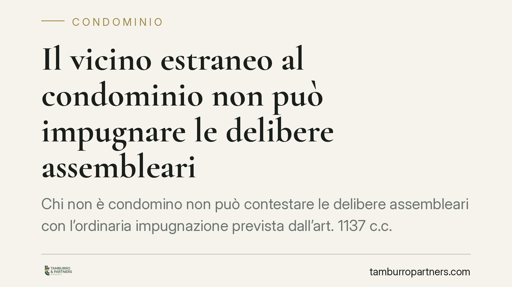

Il vicino estraneo al condominio non può impugnare le delibere assembleari
Chi non è condomino non può contestare le delibere assembleari con l'ordinaria impugnazione prevista dall'art. 1137 c.c. Al proprietario confinante resta solo la via della nullità, azionabile da chiunque vi abbia interesse. Il punto diventa decisivo quando il condominio pretende di addossare spese a un soggetto esterno: senza un titolo contrattuale, la delibera non lo vincola.

Il caso
Un proprietario confinante, estraneo alla compagine condominiale, si vede coinvolto in una decisione assembleare che lo riguarda sul piano economico. Reagisce impugnando la delibera. Ma qui emerge il primo ostacolo: chi non fa parte del condominio non dispone dello strumento dell'impugnazione ordinaria.
La questione è ricorrente nei rapporti di vicinato, specie quando opere comuni (recinzioni, muri di confine, interventi su aree limitrofe) toccano anche chi condomino non è.
Inquadramento normativo
L'art. 1137 c.c. disciplina l'impugnazione delle delibere assembleari annullabili. La legittimazione è riservata ai condomini assenti, dissenzienti o astenuti, che devono agire entro trenta giorni. Si tratta di uno strumento interno alla collettività condominiale: presuppone la qualità di condomino. Il terzo estraneo non vi rientra.
Resta invece esperibile la via della nullità. Le cause di nullità sono quelle indicate dall'art. 1418 c.c. — oggetto impossibile o illecito, mancanza di elementi essenziali, contrarietà a norme imperative — e la relativa azione, ai sensi dell'art. 1421 c.c., può essere fatta valere "da chiunque vi abbia interesse". È proprio su questa formula che si fonda la posizione del terzo: non può annullare la delibera, ma può eccepirne la nullità se dimostra un interesse concreto e attuale.
La distinzione non è formale. Cambia il tipo di vizio deducibile, cambiano i termini (la nullità è imprescrittibile, l'annullabilità soggiace a decadenza) e cambia soprattutto chi può agire.
Il nodo delle spese
Il profilo più pratico riguarda l'imputazione dei costi. Un'assemblea può deliberare un intervento che interessa anche la proprietà confinante, ma da ciò non discende automaticamente un obbligo di pagamento a carico del vicino.
Secondo la ricostruzione accolta in giurisprudenza di merito, la delibera condominiale produce effetti all'interno del condominio; non può, da sola, costituire una fonte di obbligazione verso chi ne è estraneo. Per vincolare il proprietario confinante alle spese occorre un titolo contrattuale autonomo: un accordo, una convenzione, un patto che fondi l'obbligazione su base negoziale.
In mancanza, la pretesa economica del condominio verso il terzo resta priva di fondamento. E il terzo, dal canto suo, non deve nemmeno impugnare alcunché: gli basta non essere parte del rapporto.
Implicazioni pratiche
Per il proprietario confinante il messaggio è duplice. Da un lato, non può illudersi di bloccare una decisione condominiale con l'impugnazione ordinaria: quella porta gli è chiusa. Dall'altro, non è automaticamente tenuto a pagare quanto deliberato da un'assemblea di cui non fa parte.
Per l'amministratore e per il condominio, l'indicazione è di cautela: pretendere contributi da soggetti esterni sulla base della sola delibera espone al rischio di una pretesa infondata. Se si vuole coinvolgere il vicino nelle spese, serve costruire un accordo.
Cosa fare in concreto
Se sei il proprietario confinante:
- Verifica la tua posizione: se non sei condomino, non impugnare la delibera ex art. 1137 c.c., ma valuta se sussistono profili di nullità da eccepire.
- Non pagare contributi richiesti sulla sola base di una delibera assembleare: chiedi quale titolo fonda la pretesa.
- Conserva ogni comunicazione del condominio e documenta l'eventuale coinvolgimento su opere di confine.
Se sei l'amministratore:
- Prima di imputare spese a un soggetto esterno, verifica l'esistenza di un titolo contrattuale che lo vincoli.
- Formalizza per iscritto qualsiasi accordo con il vicino sugli interventi comuni, specificando ripartizione e modalità di pagamento.
Consigliamo, in entrambi i casi, di qualificare correttamente la natura del vizio e del rapporto prima di agire: un errore sullo strumento (impugnazione in luogo di eccezione di nullità, o viceversa) può pregiudicare la posizione in giudizio.
---
Contributo informativo a cura di Tamburro & Partners - Avv. Giuseppe Tamburro. Non costituisce parere legale.
Ogni condominio ha una storia a sé.
Se gestisci un'amministrazione e vuoi un confronto su una specifica questione condominiale, scrivi allo studio. Ti rispondiamo entro un giorno lavorativo.